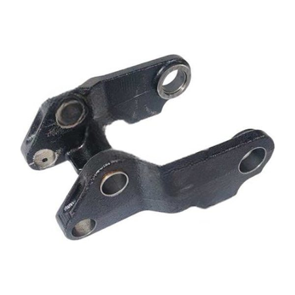

Parts › Wheels & Hubs › 46932-401

Available
Email for a quote
BT 46932-401 Load Castor Assy
| OEM part number | 46932-401 |
| Fits | BT |
| Models / notes | LPE200 |
| Category | Wheels & Hubs |
| Type | Aftermarket replacement |
Send us the quantity you need and we'll reply with pricing, usually within 24 hours. Not the exact part? We can source it. Send the part number or a photo.